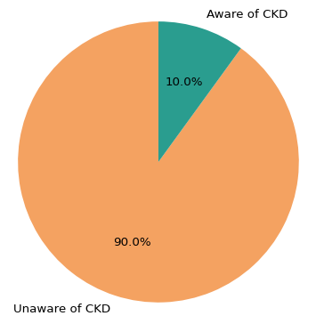
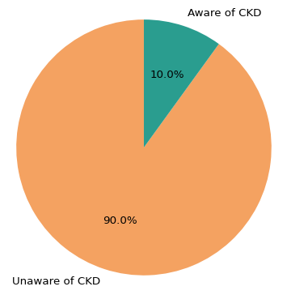
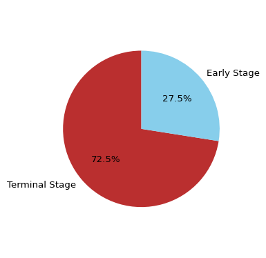
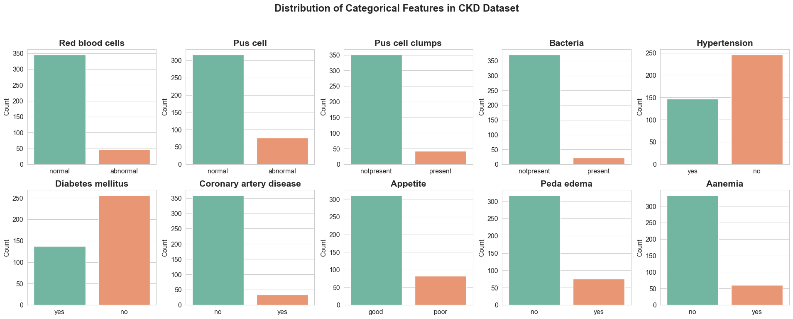
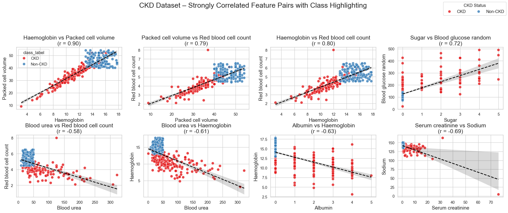

with Machine Learning & Visual Analytics
2025-04-17
Source: World Health Organization (WHO), 2020 – Global Facts on CKD
CKD often has no symptoms in early stages — making it a “silent disease”.By the time symptoms appear, irreversible damage may have occurred.

U.S. Perspective:
9 out of 10 people with CKD are unaware they have it.
— American Kidney Fund

Global Perspective:
72.5% of patients were diagnosed at the terminal stage,
and 75% had never heard of CKD before hospitalization.
— Brazzaville Hospital Study
Source: AKF · Brazzaville Study
That’s why we decided to build a machine learning model to assist in early detection of CKD, even during routine checkups — helping patients become aware of their symptoms and risks before it’s too late
Early detection enables:
- Slowing or halting disease progression
- Improved quality of life
- Reduced need for dialysis or transplant
class → CKD or not CKD
• Includes essential CKD indicators: albumin, creatinine, hemoglobin, BP
• One of the few public datasets with complete labels + clinical features
• Ideal for building a clear, interpretable ML model
This chart reveals how categorical variables like anemia, appetite, and diabetes are distributed across the patient records — helping us understand the clinical profiles common in CKD cases.
This chart displays the distribution of key clinical variables for CKD and non-CKD patients.
Common Observations from Routine Health Tests
üîπ Hemoglobin: Levels persistently < 10‚Äì11 g/dL may indicate risk of kidney dysfunction.
üîπ Blood Pressure: Sustained values > 130/80 mmHg along with abnormal labs suggest kidney function tests may be needed.
üîπ Sugar & Albumin: Elevated blood sugar hints at diabetes risk. Increased albumin in urine (proteinuria) is an early CKD indicator.
This heatmap shows how different clinical variables are correlated with each other.
1. Hemoglobin, Packed Cell Volume, and Red Blood Cell Count show strong positive correlations — reflecting their interconnected role in oxygen transport and anemia, common in CKD.
2. Serum Creatinine is negatively correlated with Sodium and Albumin, indicating impaired kidney function affects electrolyte balance and protein retention.
These plots highlight clinical feature pairs that are strongly correlated and vary by CKD status.The separation of CKD vs non-CKD patients in these pairs reveals underlying clinical patterns that can support early detection and diagnosis.
Based on our exploratory data analysis, we selected a focused set of features that showed strong correlation with CKD and had clinical relevance in early diagnosis.
We define our modeling variables as:
The objective is to build a simple, interpretable machine learning model that can assist in CKD detection using just these five features.
✅ Clinically meaningful features
✅ Minimal but strong predictors
✅ Useful in real-world check-ups
✅ Balanced for interpretability
We tested three key machine learning models to understand their strengths in detecting CKD using core clinical features:
From this, we learned that while all models had strengths, Decision Tree offered the best balance of performance and explainability for early CKD detection.
1 dtc = DecisionTreeClassifier(random_state=42) 2 dtc.fit(X_train, y_train)
| Model | Accuracy | Precision | Recall | F1-Score |
|---|---|---|---|---|
| SVM (RBF Kernel) | 91% | 0.90 | 0.91 | 0.90 |
| K-Nearest Neighbors | 95% | 0.94 | 0.95 | 0.95 |
| Decision Tree | 99% | 0.99 | 0.98 | 0.99 |
Based on accuracy and interpretability, Decision Tree was chosen as our final model for early CKD detection.
Decision Tree leads with perfect accuracy and interpretability, making it ideal for clinical deployment.
KNN performs well and is simple, but less interpretable than DT in complex cases.
SVM offers good predictive power, but its lack of transparency limits its usefulness in healthcare.
Overall, Decision Tree balances performance and explainability — perfect for medical use-cases.
The Decision Tree model shows fewer misclassifications and better separation between CKD and Non-CKD cases.
Early detection isn’t just a technical solution — it’s a human one.
Through this project, we explored how data-driven insights and machine learning
can support timely diagnosis and improve patient outcomes in Chronic Kidney Disease.
Have questions or feedback? We’d love to hear from you!
Presented by: Shreemithra Naveen & Sai Laasya Gorantla
INFO 511 – University of Arizona | April 2025